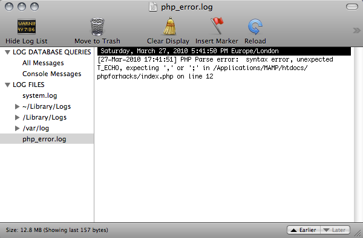
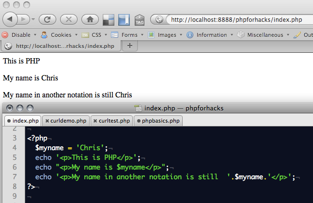
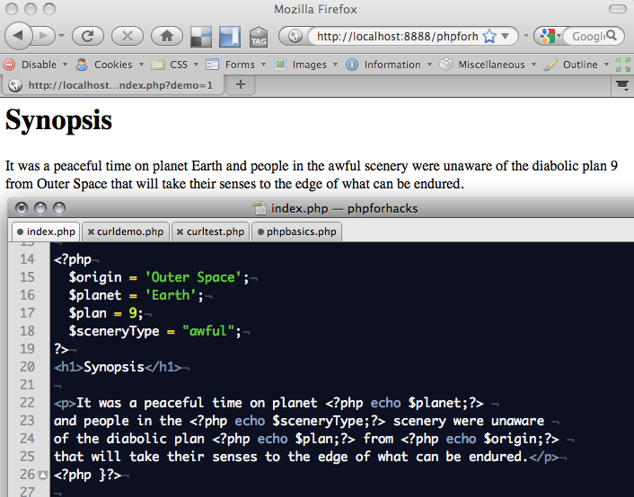
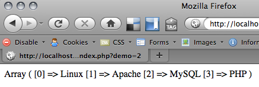
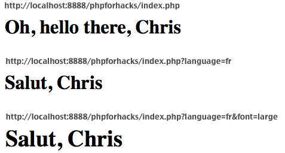
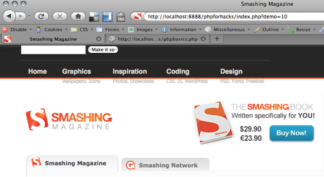
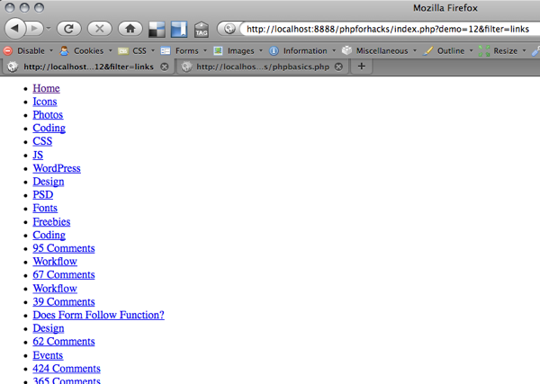

In this article I want to introduce you to the basics of PHP. We'll concentrate specifically on PHP to access web services and turn static HTML pages into dynamic ones by retrieving data from the web and by showing different content dependent on what users entered in forms or requested in the URL. You won't come out at the end of this article as a professional PHP developer but it'll get you well on the way of building a small page that uses web services. You can find a lot of great PHP info out on the web and most of the time you will end up on the PHP.net site itself. I was however asked repeatedly on several hack days and competitions to write this quick introduction article - so here it is.
What is PHP?
PHP is a server-side language that has become a massive success because of three reasons:- It is a very easy, forgiving language - variables can be anything and you can create them any time you want to.
- it is part of the free LAMP stack (Linux, Apache, MySQL, PHP) and thus available on almost any server you can rent on the web.
- it does not need any special editor, environment or build process. All you do is create a file with the
.phpfile type, mix PHP and HTML and put it on your server for displaying.
Installing PHP locally and your first code
To run PHP locally on your computer you need a local server with PHP enabled. The easiest way is to download and install MAMP for OSX or XAMPP for Windows. Once you have any of these packages installed you can start using PHP. Simply create a file called index.php in the htdocs folder of your MAMP or XAMPP install.
In this file, type (or actually copy + paste) the following:
<?php
$myname = 'Chris';
echo '<p>This is PHP</p>';
echo "<p>My name is $myname</p>"
echo '<p>My name in another notation is still '.$myname.'</p>';
?>If you open this file in a browser by accessing your XAMPP or MAMP install (via http://localhost/index.php or http://localhost:8888/index.php) you should get the following:
This is PHP
My name is Chris
My name in another notation is still ChrisHowever, you won't. The problem is that the third line does not end in a semicolon ";". This is an error. Depending on what PHP installation you have you either get an error message or simply nothing. If you got nothing, find the file called php_error.log on your hard drive and open it - it will tell you what went wrong . So, the first thing to remember is that every line of PHP needs to end in a semicolon. If we fix this problem we get the result:
<?php
$myname = 'Chris';
echo '<p>This is PHP</p>';
echo "<p>My name is $myname</p>";
echo '<p>My name in another notation is still '.$myname.'</p>';
?>You can see the first few features of PHP that are important:
- PHP blocks start with
<?phpand end with?>- anything within these two commands will be interpreted as PHP and returned to the document as HTML. - Every line of PHP has to end with a semicolon ";" - otherwise it is an error.
- Variables in PHP start with a $ - not with the var keyword like you'd do it in JavaScript (this is where it gets confusing with jQuery and Prototype)
- You print out content to the document in PHP with the
echocommand. There is also aprintcommand which does almost the same so you can use that, too. - In this example we define a string called
mynameas "Chris". To print it out with the echo command surrounded by other text you need to either embed the variable name in a text with quotation marks or to concatenate the string with a full stop when you use single quotation marks. This is line 3 and 4 - they do the same but show the different syntax. Concatenation is always achieved with the full stop - never with a + as you do in JavaScript.
You can jump in and out of PHP anywhere in the document. So if you intersperse PHP with HTML blocks, that is totally fine. For example:
<?php
$origin = 'Outer Space';
$planet = 'Earth';
$plan = 9;
$sceneryType = "awful";
?>
<h1>Synopsis</h1>
<p>It was a peaceful time on planet <?php echo $planet;?>
and people in the <?php echo $sceneryType;?> scenery were unaware
of the diabolic plan <?php echo $plan;?> from <?php echo $origin;?>
that will take their senses to the edge of what can be endured.</p>This has the following output: 
Are you with me so far? If you want to show something on the screen, you use echo - if it is numbers or a string. If you need to show more complex structures, you need loops or specialized debugging methods.
Displaying more complex data types
You can define arrays in PHP using the array() method:
$lampstack = array('Linux','Apache','MySQL','PHP');If you simply want to display a complex datatype like this in PHP for debugging you can use the print_r() command:
$lampstack = array('Linux','Apache','MySQL','PHP');
print_r($lampstack);This gives you all the information but it doesn't help you structuring it as HTML:  For this, you need to access the elements with the array counter. In PHP this is done with the [] brackets:
<ul>
<?php
$lampstack = array('Linux','Apache','MySQL','PHP');
echo '<li>Operating System:'.$lampstack[0] . '</li>';
echo '<li>Server:' . $lampstack[1] . '</li>';
echo '<li>Database:' . $lampstack[2] . '</li>';
echo '<li>Language:' . $lampstack[3] . '</li>';
?>
</ul>See this demo in action.
This of course is stupid programming as it is not flexible. If you get the chance to make a computer do your dirty work for you, make it do it. In this case, we could define two arrays and use a loop:
<ul>
<?php
$lampstack = array('Linux','Apache','MySQL','PHP');
$labels = array('Operating System','Server','Database','Language');
$length = sizeof($lampstack);
for( $i = 0;$i < $length;$i++ ){
echo '<li>' . $labels[$i] . ':' . $lampstack[$i] . '</li>';
}
?>
</ul>The for loop works the same way as it does in JavaScript - the only difference is that you read the size of an array not with array.length but with sizeof($array) instead.
Again, this example is not really clever, as it assumes that both the $lampstack and the $labels array are the same length and in the same order. Instead of using this, I'd use an associated array:
<ul>
<?php
$lampstack = array(
'Operating System' => 'Linux',
'Server' => 'Apache',
'Database' => 'MySQL',
'Language' => 'PHP'
);
$length = sizeof($lampstack);
$keys = array_keys($lampstack);
for( $i = 0;$i < $length;$i++ ){
echo '<li>' . $keys[$i] . ':' . $lampstack[$keys[$i]] . '</li>';
}
?>
</ul>
The function array_keys() gives you back all the keys of an array as an array itself. This way we can display the keys and the values at the same time.
A shorter way of achieving the same principle which works both with arrays and with objects is using the foreach() loop construct:
<ul>
<?php
$lampstack = array(
'Operating System' => 'Linux',
'Server' => 'Apache',
'Database' => 'MySQL',
'Language' => 'PHP'
);
foreach( $lampstack as $key => $stackelm ){
echo '<li>' . $key . ':' . $stackelm . '</li>';
}
?>
</ul>This is the shortest way of displaying a complex construct - it will however also fail when $lampstack is not an array. So checking for sizeof() is still a good plan. You do this with a conditional.
Using conditionals
Conditionals are if statements - both in the English language and in almost any programming language I know. So for example to test if an array is safe to loop over you use the sizeof() test:
<ul>
<?php
$lampstack = array(
'Operating System' => 'Linux',
'Server' => 'Apache',
'Database' => 'MySQL',
'Language' => 'PHP'
);
if( sizeof($lampstack) > 0 ){
foreach( $lampstack as $key => $stackelm ){
echo '<li>' . $key . ':' . $stackelm . '</li>';
}
}
?>
</ul>Common conditionals are:
if($x > 10 and $x < 20)- is$xlarger than 10 and less than 20?if(isset($name))- has the variable$namebeen defined?if($name == 'Chris')- does the variable$namehave the value Chris?if($name == 'Chris' or $name == 'Vitaly')- does the variable$namehave the value Chris or the value Vitaly?
Cool, but what if you want to make that reusable?
Functions in PHP
In order to make a task even more generic, you can write a function. In this case we put the loop and the testing in a function and simply call it with different arrays:
<?php
function renderList($array){
if( sizeof($array) > 0 ){
echo '<ul>';
foreach( $array as $key => $item ){
echo '<li>' . $key . ':' . $item . '</li>';
}
echo '</ul>';
}
}
$lampstack = array(
'Operating System' => 'Linux',
'Server' => 'Apache',
'Database' => 'MySQL',
'Language' => 'PHP'
);
renderList($lampstack);
$awfulacting = array(
'Natalie Portman' => 'Star Wars',
'Arnold Schwarzenegger' => 'Batman and Robin',
'Keanu Reaves' => '*'
);
renderList($awfulacting);
?>Notice that functions do not start with a dollar sign.
That is already most of the magic of PHP. The rest is all about functions that are build for you to do all kind of things: convert strings, sort arrays, find things in other things, access the file system, set cookies and many more functions - all of which doing one thing and one thing right. I keep catching myself writing complex functions in PHP just to realize looking at the docs that there is a native function for that.
Interacting with the web - URL parameters
Let's start playing with the web in PHP - or, better said - information that comes from the browser address bar or forms for you to re-use. In order to get parameters from the current URL you use the global $_GET array. So, if you call the index.php script with http://localhost/index.php?language=fr&font=large you can change the display and locale by checking for these settings. The language parameter will be available as $_GET['language'] and the font parameter as $_GET['font']:
<?php
$name = 'Chris';
// if there is no language defined, switch to English
if( !isset($_GET['language']) ){
$welcome = 'Oh, hello there, ';
}
if( $_GET['language'] == 'fr' ){
$welcome = 'Salut, ';
}
switch($_GET['font']){
case 'small':
$size = 80;
break;
case 'medium':
$size = 100;
break;
case 'large':
$size = 120;
break;
default:
$size = 100;
break;
}
echo '<style>body{font-size:' . $size . '%;}</style>';
echo '<h1>'.$welcome.$name.'</h1>';
?>This means now that you can send URL parameters to change the behaviour of this document:
- http://localhost:8888/index.php
- http://localhost:8888/index.php?language=fr
- http://localhost:8888/index.php?language=fr&font=large
Notice that it is always the best to predefine a set of values that are acceptable for a certain parameter. The earlier example might as well have the font size in pixels as a parameter and we write that to the document but that means that we need to write a good validation script to prevent end users from sending bad values or even malicious code through the parameter.
Sending malicious code via a parameter without filtering is called Cross Site Scripting or XSS and is one of the big security problems of the web. You can prevent against it by not printing out the values of parameters but instead using them in comparisons and by using the filters provided by PHP.
Say for example you want to allow users to enter some data with a form that you will display later on. Make sure that you filter out the results:
<?php
$search_html = filter_input(INPUT_GET, 's',
FILTER_SANITIZE_SPECIAL_CHARS);
$search_url = filter_input(INPUT_GET, 's',
FILTER_SANITIZE_ENCODED);
?>
<form action="index.php" method="get">
<div>
<label for="search">Search:</label>
<input type="text" name="s" id="search"
value="<?php echo $search_html;?>">
</div>
<div class="bar"><input type="submit" value="Make it so"></div>
</form>
<?php
if(isset($_GET['s'])){
echo '<h2>You searched for '.$search_html.'</h2>';
echo '<p><a href="index.php?search='.$search_url.'">Search again.</a></p>';
}
?>See the filtering example in action. Without the filters, attackers could send parameters like index.php?s="<script> which would execute third party code in your site. With filtering this malicious code gets converted to HTML entities.
If you want to use POST as the method to send the data in your form the PHP variables change accordingly to $_POST for the array and INPUT_POST for the filter.
Loading content from the web
PHP comes with a lot of file functions that allow you to read and write files from the hard drive or load content from the web. I found however that for security reasons a lot of hosting companies disable them - especially when you try to read content from a third party resource. The workaround is to use cURL to load information from the web. cURL is a tool that allows you to make HTTP requests and get the information back from them - so to say a browser in command form. I've written a detailed post about cURL and how to use it, so here's just the most simple use case for you:
<?php
// define the URL to load
$url = 'http://www.smashingmagazine.com';
// start cURL
$ch = curl_init();
// tell cURL what the URL is
curl_setopt($ch, CURLOPT_URL, $url);
// tell cURL that you want the data back from that URL
curl_setopt($ch, CURLOPT_RETURNTRANSFER, 1);
// run cURL
$output = curl_exec($ch);
// end the cURL call (this also cleans up memory so it is
// important)
curl_close($ch);
// display the output
echo $output;
?>If you run this in a browser, you see the Smashing Magazine homepage.  You can however also take that data and strip out content:
<?php
// define the URL to load
$url = 'http://www.smashingmagazine.com';
// start cURL
$ch = curl_init();
// tell cURL what the URL is
curl_setopt($ch, CURLOPT_URL, $url);
// tell cURL that you want the data back from that URL
curl_setopt($ch, CURLOPT_RETURNTRANSFER, 1);
// run cURL
$output = curl_exec($ch);
// end the cURL call (this also cleans up memory so it is
// important)
curl_close($ch);
// if a filter parameter with the value links was sent
if($_GET['filter'] == 'links'){
// get all the links from the document and show them
echo '<ul>';
preg_match_all('/<a[^>]+>[^<\/a>]+<\/a>/msi',$output,$links);
foreach($links[0] as $l){
echo '<li>' . $l . '</li>';
}
echo'</ul>';
// otherwise just show the page
} else {
echo $output;
}
?>If you open this in your browser you get all the links on smashing magazine and none of the other content.  In nowaday's web development you are more likely to use APIs than loading web sites though, which is why you need a way to convert XML and JSON returned from a web service into PHP friendly data.
Displaying XML content
The easiest way to deal with XML content in PHP is to use the SimpleXML functions of PHP. Using this we can turn a bunch of XML into a PHP object and loop over this. Say for example you want to show the Smashing Magazine RSS feed you can do the following:
<?php
$url = 'http://rss1.smashingmagazine.com/feed/';
$ch = curl_init();
curl_setopt($ch, CURLOPT_URL, $url);
curl_setopt($ch, CURLOPT_RETURNTRANSFER, 1);
$output = curl_exec($ch);
curl_close($ch);
$data = simplexml_load_string($output);
echo '<ul>';
foreach($data->entry as $e){
echo '<li><a href="' . $e->link[0]['href'] .
'">'.$e->title.'</a></li>';
}
echo '</ul>';
?>The simplexml_load_string() function takes the XML document and turns it into a PHP object with arrays. How did I find out to loop over data->entry and get the href via link[0]['href']? Simple. I did a print_r($output) and checked the source of the document with CMD+U in Firefox on my mac. That showed me that entry is an array. I then did a print_r($e) in the loop to see all the properties of every entry. If it is part of the @attributes array, you need to use the [] notation.
That's all. The only stumbling block you will encounter are CDATA blocks and namespaces in SimpleXML. Stuart Herbert has a good introduction to these two issues in this article.
Displaying JSON content
The data format JSON is the low-fat alternative to XML. It is far less complex (no namespaces) and if you work in a JavaScript environment, it is native to the browser. This makes it very fast and easy to use and thus started to become a very much used data format for APIs. In essence, JSON is a JavaScript object. So for example I could write the LAMP stack example as:
{"lampstack":
{
"operatingsystem" : "Linux",
"server" : "Apache",
"database" : "MySQL",
"language" : "PHP"
}
}You can convert this to PHP using the json_decode() method and get it back as a PHP object:
<?php
$json = '{
"lampstack":
{
"operatingsystem":"Linux",
"server":"Apache",
"database":"MySQL",
"language":"PHP"
}
}';
print_r(json_decode($json));
?>One API that returns JSON is the Twitter trends API. For example if you load this API's URL with cURL and do a print_r() after json_decode() you get the following back:
<?php
$url = 'http://search.twitter.com/trends.json';
$ch = curl_init();
curl_setopt($ch, CURLOPT_URL, $url);
curl_setopt($ch, CURLOPT_RETURNTRANSFER, 1);
$output = curl_exec($ch);
curl_close($ch);
$data = json_decode($output);
print_r($data);
?>stdClass Object
(
[trends] => Array
(
[0] => stdClass Object
(
[name] => #nowplaying
[url] => http://search.twitter.com/search?q=%23nowplaying
)
[1] => stdClass Object
(
[name] => #Didntwannatellyou
[url] => http://search.twitter.com/search?q=%23Didntwannatellyou
)
[2] => stdClass Object
(
[name] => #HappyBirthdayGagaBR
[url] => http://search.twitter.com/search?q=%23HappyBirthdayGagaBR
)
[3] => stdClass Object
(
[name] => Justin Bieber
[url] => http://search.twitter.com/search?q=%22Justin+Bieber%22
)
[4] => stdClass Object
(
[name] => #FreakyFactSays
[url] => http://search.twitter.com/search?q=%23FreakyFactSays
)
[5] => stdClass Object
(
[name] => #YouSoGangsta
[url] => http://search.twitter.com/search?q=%23YouSoGangsta
)
[6] => stdClass Object
(
[name] => I ♥
[url] => http://search.twitter.com/search?q=%22I+%E2%99%A5%22
)
[7] => stdClass Object
(
[name] => #MeMyselfandTime
[url] => http://search.twitter.com/search?q=%23MeMyselfandTime
)
[8] => stdClass Object
(
[name] => #2010yearofJonas
[url] => http://search.twitter.com/search?q=%232010yearofJonas
)
[9] => stdClass Object
(
[name] => Easter
[url] => http://search.twitter.com/search?q=Easter
)
)
[as_of] => Sun, 28 Mar 2010 19:31:30 +0000
)
You can then use a simple loop to render the current trends as an unordered list:
<?php
$url = 'http://search.twitter.com/trends.json';
$ch = curl_init();
curl_setopt($ch, CURLOPT_URL, $url);
curl_setopt($ch, CURLOPT_RETURNTRANSFER, 1);
$output = curl_exec($ch);
curl_close($ch);
$data = json_decode($output);
echo '<h2>Twitter trending topics ('.$data->as_of.')</h2>';
echo '<ul>';
foreach ($data->trends as $t){
echo '<li><a href="'.$t->url.'">'.$t->name.'</a></li>';
}
echo '</ul>';
?>Putting it all together
Let's do a quick example using all the things we learnt so far - a simple search interface for the web.
Using Yahoo's YQL it is pretty easy to do a web search for "cat" with the command select * from search.web where query="cat" sent to the YQL endpoint. You can define JSON as the return format and the rest means you simply enhance the earlier form example:
<?php
$search_html = filter_input(INPUT_GET, 's', FILTER_SANITIZE_SPECIAL_CHARS);
$search_url = filter_input(INPUT_GET, 's', FILTER_SANITIZE_ENCODED);
?>
<form action="index.php" method="get">
<div>
<label for="search">Search:</label>
<input type="text" name="s" id="search"
value="<?php echo $search_html;?>">
<input type="hidden" name="demo" value="17">
<input type="submit" value="Make it so">
</div>
</form>
<?php
if(isset($_GET['s'])){
echo '<h2>You searched for '.$search_html.'</h2>';
$yql = 'select * from search.web where query="'.$search_url.'"';
$url = 'http://query.yahooapis.com/v1/public/yql?q='.
urlencode($yql).'&format=json&diagnostics=false';
$ch = curl_init();
curl_setopt($ch, CURLOPT_URL, $url);
curl_setopt($ch, CURLOPT_RETURNTRANSFER, 1);
$output = curl_exec($ch);
curl_close($ch);
$data = json_decode($output);
echo '<ul>';
foreach ($data->query->results->result as $r){
echo '<li><h3><a href="'.$r->clickurl.'">'.$r->title.'</a></h3>'.
'<p>'.$r->abstract.' <span>('.$r->dispurl.')</span></p></li>';
}
echo '</ul>';
echo '<p><a href="index.php?search='.$search_url.'&demo=17">Search again.</a></p>';
}
?>Interaction with JavaScript
One thing that people keep asking about is to send information from PHP and JavaScript and back. This is done in a few ways.
- If you want to send information from JavaScript to PHP you need to either alter the
hrefof a link or populate a hidden form field. The other solution of course is to use Ajax. - If you want to send information from PHP to JavaScript simply render a script element and write out the PHP information with an
echostatement. - Using PHP's
header()function andjson_encode()you can send data back to the browser as JavaScript and thus make it possible to use it as asrcattribute of ascriptnode.
So for example when you want to have the smashing magazine RSS feed as a JavaScript object, you can do the following:
<?php
header('Content-type: text/javascript');
$url = 'http://rss1.smashingmagazine.com/feed/';
$ch = curl_init();
curl_setopt($ch, CURLOPT_URL, $url);
curl_setopt($ch, CURLOPT_RETURNTRANSFER, 1);
$output = curl_exec($ch);
curl_close($ch);
$data = simplexml_load_string($output);
$data = json_encode($data);
echo 'var smashingrss='.$data;
?>You could then use this in a JavaScript block:
<script src="http://icant.co.uk/articles/phpforhacks/index.php?demo=18"></script>
<script>alert(smashingrss.title);</script>Using header() and json_encode() you could do any complex conversion and filtering in PHP and re-use it in JavaScript.
Summary
I hope this gave you an idea of what PHP is and how you can use it to use web services and build your own APIs to re-use in JavaScript. Using PHP for the web boils down to a few tricks:
- Use cURL to load data from web resources
- Convert information with
simplexml_load_string()andjson_decode() - Check the structure of returned information with
print_r() - Loop over information with
foreach() - Use the
$_GET[]and$_POST[]arrays to re-use form data and URL parameters - Filter information from the user and URLs using the inbuilt PHP filter methods
There is a lot of documentation out there, and your best bet is to go directly to the PHP homepage and read/download the docs. You should especially check the user-added comments as this is where the real gems ands implementation examples are listed.